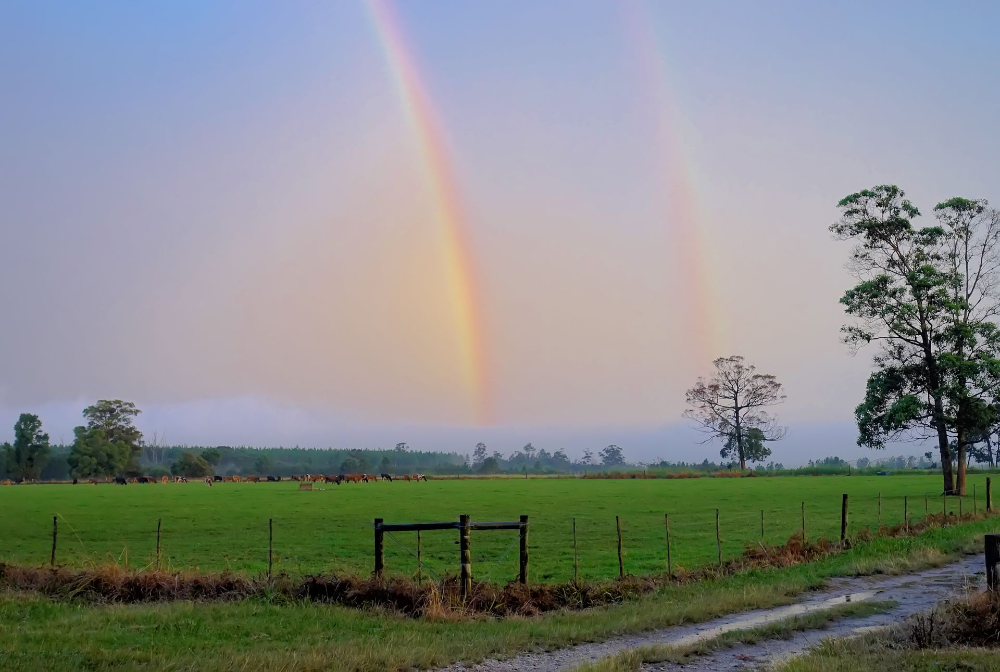
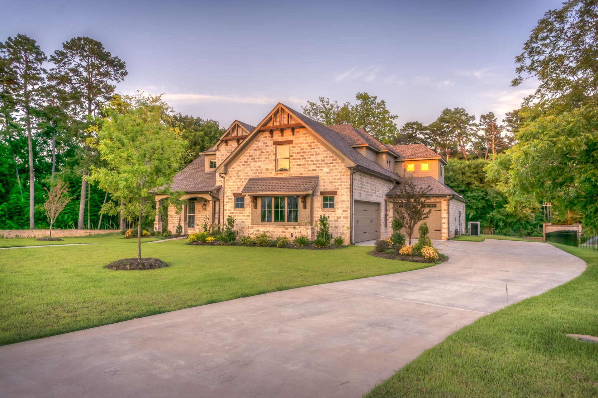

Tide line
Concrete set back from surge — openings sized for salt air, not spectacle.

Horizon panels
Concrete set back from surge — openings sized for salt air, not spectacle.
Roof angles track sun path; shadows become the secondary elevation.

Glass decks float above stone — privacy without losing the horizon.

02 — Craft
Scroll snaps through coastal studies — each panel draws its seam line as it lands.
03 — Process
04 — Gallery

05 — Journal
Signature interaction tuned for thumb scroll on mobile — hamburger nav, 44px targets, prefers-reduced-motion fallbacks.
Licensed Pexels stills, cropped per viewport — no remote hotlinking in production build.
06 — FAQ
Email or call — we confirm studio slots within one business day.
No — this is a fictional brand demo by İzden Creative.
Meridian Atelier — demo by İzden Creative.